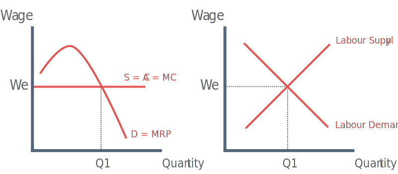
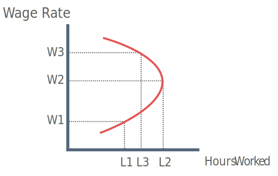

How are wages determined?
When determining wages we assume the following conditions:
Assumptions
Many firms
Perfect information about wages and job conditions
Firms offering identical jobs
Many workers with the same skills
Diagram

Equilibrium wage is set where demand = supply
In a perfectly competitive market firms are wage takers because if they set wages below equilibrium workers will not except the wage.
Firms have to set wages at We.
Firms maximise profits by employing at Q1 where MRP of labour = MC of labour.
Elasticity of Supply of Labour for an industry
Elasticity of supply of labour measures the responsiveness of the quantity of labour supplied to a change in the real wage rate.
Formula:
% ∆ in Quantity of Labour supplied % ∆ in wage rate
Factors determining supply to a particular occupation
Skill or Qualifications
Jobs requiring a specific skill wil have more inelastic supply curve because it is harder to expand workforce in short period of time.
Length of training period
The longer the training period, the more inelastic the supply curve of labour. This is because workers are put off by long training period and workers cannot simply enter the market place even if higher wages are offered.
Labour mobility
If there is geographical and occupational mobility then the supply curve of labour will be more elastic. This is because labour can easily move to places where wages might be higher.
Risk
If a particular job has a high risk of death or injury a large increase in wages may have little effect on the quantity of labour suppled effect on the quantity of labour supplied. In this case, supply of labour will be inelastic.
Job Security
The security of an occupation can have an effect on the elasticity of the supply of labour. An occupation which has very low job security then an increase in wage may have proportionally less of an effect on the labour supply (inelstic).
An individuals supply curve of labour

Substitution effect:
As wages rise (W1 – W2) the opportunity cost of leisure time increases. This provides greater incentive to work (L1 – L2).
Income effect:
As wages rise further (W2 – W3) wages may hit target income. They respond to wage increase by taking more leisure time (L2 – L3) while maintaining their target income.
Wage Differentials - Why do wages differ?
1) Compensating differentials
Higher pay as a result of risk-taking, working in poor conditions and having to work unsocial hours. People working night shift at TESCO earn more than those doing the same job in the day.
2) Marginal Revenue Product
Workers whose efficiency is highest and generate more revenue for a firm generally receive higher wages. Top sports stars can command top wages because of their potential to generate extra revenue from ticket sales and merchandising.
3) Discrimination
One group of workers may be awarded higher / lower wages than other groups. E.g. Men and Women.
4) Trade Union Protection
Many workers in low paid jobs do not have trade unions acting on their behalf to protect them from power of employer.
5) Different skill levels
Skilled workers are in greater demand than semi-skilled workers. Highly skilled workers are often in inelastic supply and rising demand forces up the "going wage rate" in a particular industry.